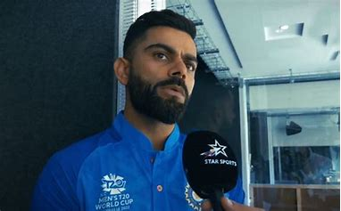

Virat Kohli breaks his silence on India’s exit from ICC T20 World Cup:The Men in Blue suffered a shocking defeat to England in the second semi-finals and crashed out of the ICC T20 World Cup.Kohli took to Twitter to post his message for failing to bring the ICC title back home.He wrote, “Thank you to all our fans who turned up in huge numbers throughout to support us in the stadiums".
Rohit Sharma, Dinesh Karthik, R Ashwin may retire from T20Is:While a retirement call is always a player's personal choice,after every big tournament,especially in case of a favourite team failing to go all the way some seniors mull over such decisions and make way for youngsters. Former England spinner feels the same may happen in the Indian camp after their T20 World cup ended.
Messi vs Cristiano Ronaldo, Argentina vs Portugal:Former India spinner Pragyan Ojha has commented on his dream World Cup final and said that he would like to see Cristiano Ronaldo and Lionel Messi lock horns in the summit clash.Ronaldo and Messi are considered to be two of the best footballers of this generation and a clash between the two at the club level has always generated a lot of interest among viewers.
Sharath Kamal to receive Dhyan Chand Khel Ratna Award:Table Tennis star Achanta Sharath Kamal is set to receive Dhyan Chand Khel Ratna Award in 2022, according to an announcement from the Ministry of Youth Affairs & Sports on Monday. At the Birmingham 2022 Commonwealth Games, Sharath Kamal had a standout performance, winning four medals, including three golds.